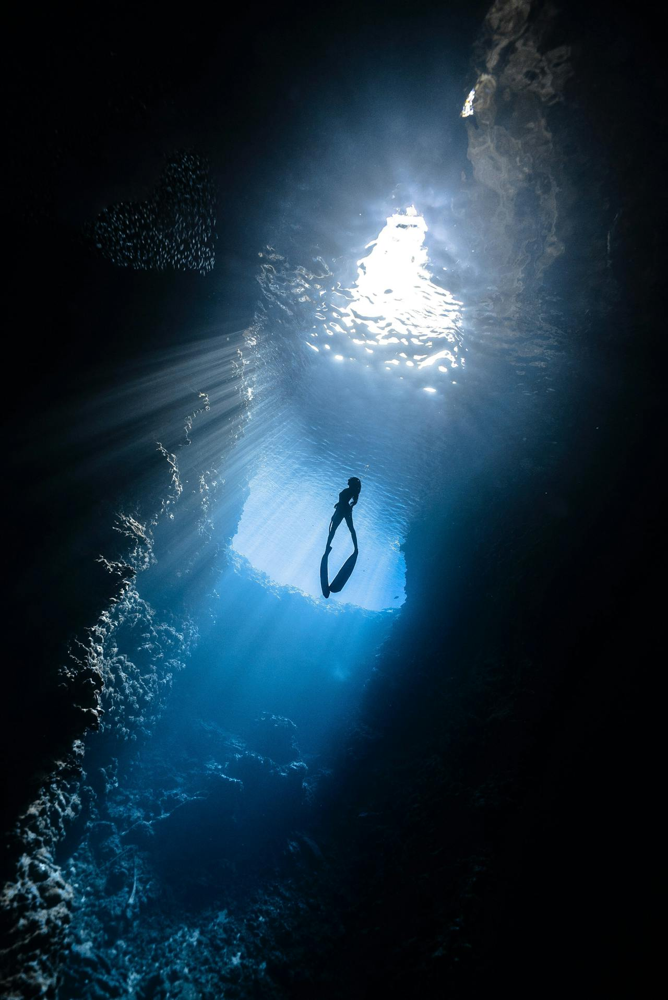
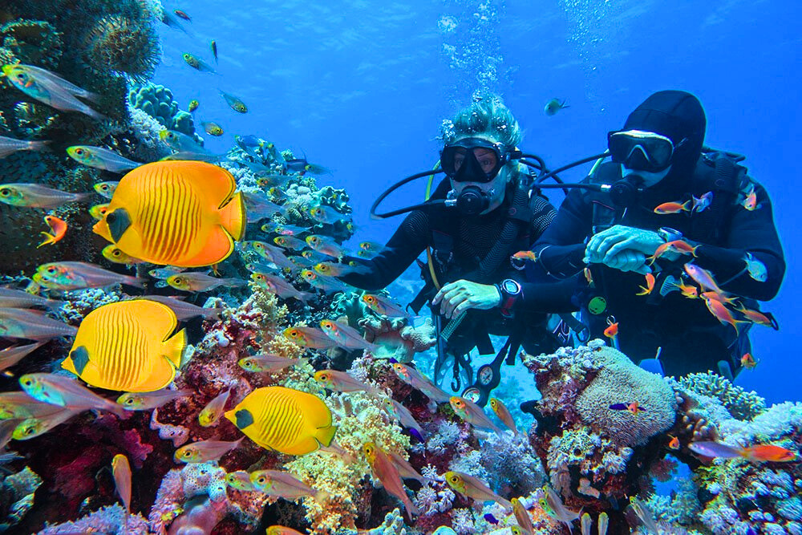
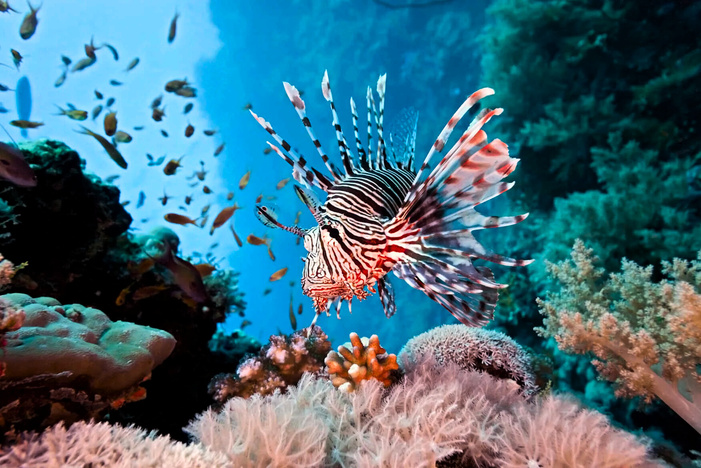
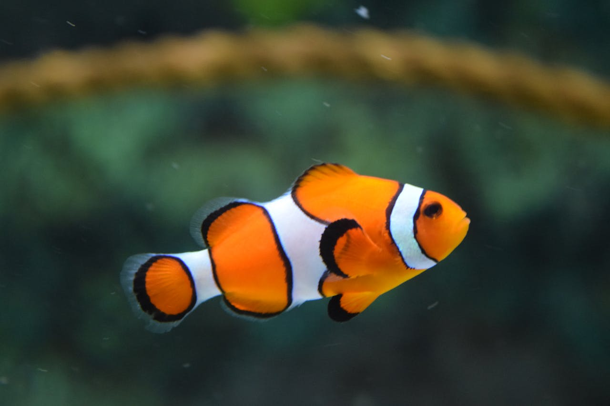

Koh Phangan is located 20 km north of Samui and is home to some of the best dive sites in the entire Gulf of Thailand. We organize regular day trips from Samui on speedboats and dive boats. Travel time is 30 to 60 minutes depending on the dive site. You depart in the morning and return by evening, completing 2–3 dives at incredible locations.
⭐ Sail Rock — Jewel of the Gulf of Thailand
Sail Rock (Hin Bai) is a granite pinnacle rising from 40 meters depth and protruding 15 meters above water. Located between Samui and Koh Phangan in the open sea. This is undoubtedly the best dive site in the entire Gulf of Thailand, attracting divers from around the world.

Signature
The Chimney
A unique vertical crevice inside the rock — the 'chimney'. Entry at about 18 meters depth, exit at 6 meters. You swim vertically upward inside the rock, watching light filter from above. One of the most memorable underwater experiences in Thailand. Suitable for Advanced Open Water divers and above.
18m → 6mSwim-through
Season: Feb–May
Whale Sharks
From February to May, whale sharks regularly appear at Sail Rock — the largest fish on the planet, reaching 12 meters in length. They are completely safe for humans and feed on plankton. An encounter with a whale shark is a moment you'll never forget. Sail Rock is one of the best places in Thailand for such encounters.
Up to 12m longHarmless
Spectacle
Barracuda Tornadoes
Huge schools of chevron barracuda form impressive 'tornadoes' — spinning columns of hundreds of fish. This is one of the most photogenic spectacles of the underwater world. Sail Rock is also home to giant groupers, batfish, moray eels, rays, clownfish, triggerfish and many other species.
Depth up to 40mVisibility 10–30m
Koh Phangan Dive Sites

Beginners
Mae Haad
Coral reef on Koh Phangan's northwest, connecting the main island with small Koh Ma island. Shallow water from 5 to 15 meters, excellent visibility, incredible diversity of corals and fish. Home to turtles, parrotfish, moray eels, butterflyfish. Perfect for beginners and photographers — calm conditions and rich life.
Long coral reef at Haad Yao beach on Koh Phangan's west coast. Depth from 6 to 20 meters. Gentle slope covered in soft and hard corals. Excellent spot for relaxed diving: angelfish, clownfish in anemones, nudibranchs for macro enthusiasts. Reef sharks often spotted at depth.
We pick you up from your Samui hotel at 7:00–7:30 AM. Transfer to the pier where a comfortable dive boat or speedboat awaits. Safety and dive planning briefing on board.
2
Dives
2–3 dives per day depending on the program. Between dives — surface rest with fruits, tea, water. Lunch on board. Underwater time — 45–60 minutes per dive depending on air consumption.
3
Return
Return to Samui by 4:00–5:00 PM. Transfer back to hotel. Share impressions and photos on the way. A full day of adventure — you'll return in the evening full of emotions and new stories.
Marine Life
The waters around Koh Phangan and Sail Rock are among the richest in the Gulf of Thailand. Visibility ranges from 10 to 30 meters, best from March to September.
Season: Feb–May
Whale Sharks
The largest fish on the planet — up to 12 meters. Completely harmless, feeding on plankton. Sail Rock is the best spot in the Gulf to encounter them.
Year-round
Sea Turtles
Green and hawksbill turtles are frequent visitors to Mae Haad and surrounding reefs. They often approach divers within arm's reach.
Residents
Batfish & Groupers
Schools of batfish hover near Sail Rock's summit, while giant groupers weighing up to 100 kg allow divers within arm's reach.

Photogenic
Lionfish & Scorpionfish
Lionfish with their luxurious fins are among the most photogenic residents. Scorpionfish masterfully camouflage among the corals.
Triggerfish & Reef Fish
Titan triggerfish, angelfish, butterflyfish, parrotfish — incredible diversity on every dive.

Corals & Macro
Soft and hard corals, gorgonians, sea fans, anemones with clownfish. Dozens of nudibranch species — a macro photographer's paradise.
Book a Day Trip
Day trips to Sail Rock and Koh Phangan run daily in good weather. Book in advance — spots are limited!